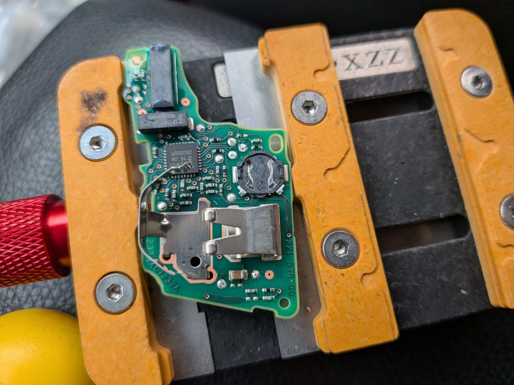

這是一個令車主心碎的瞬間：鑰匙隨手放在車頂，啟動行駛後掉落，接著被後方車輛輾過。今日接獲 Skoda Kamiq 車主緊急求助，感應鑰匙已完全碎裂、電路板嚴重變形，車輛無法感應也無法發動。
輾壓毀損的技術挑戰
當智慧鑰匙被輾壓後，最嚴重的不是外殼破碎，而是電路板上的防盜晶片 (Transponder) 與認證資料 (Security Data) 是否受損。若直接回原廠，通常需要耗費數週等待德國總部下訂全車鎖組與電腦，費用更是驚人。

極致核心的救援方案
技術團隊抵達現場後，立即進行以下精密作業：
- 晶片數據救援：嘗試從毀損的主板中讀取殘留的防盜授權碼。
- OBD 安全存取：連接 Skoda 專用診斷通訊協定，跳過損壞的鑰匙直接與車輛電腦通訊。
- 全新密鑰重構：在確認車輛合法權限後，現場匹配兩把全新的原廠級智慧鑰匙。
任務摘要：
- 車型：Skoda Kamiq
- 狀況：鑰匙掉落被輾毀 (Totally Crushed)
- 技術：EEPROM 數據採集、MQB 平台匹配
- 結果：現場完工、兩把全新鑰匙順利交付
中彰投 24H 專業救援諮詢
鑰匙建議隨身放入口袋或包包，避免放置於車頂、車蓋等不穩固處。若發生意外毀損，請勿強行修復主板，以免造成短路燒毀車輛防盜電腦，應第一時間連繫極致核心專業處理。